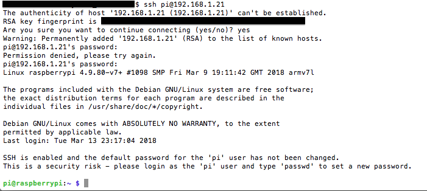

Existen diferentes sistemas operativos soportados por Raspberry Pi, siendo algunos de ellos distribuciones de terceros (tales como Ubuntu, Windows, etc.). En este caso, se opta por la distribución oficial de la propia fundación, se trata de una distribución basada en Debian, denominada RASPBIAN. En concreto RASPBIAN STRETCH LITE, que es una versión sin interfaz de escritorio, lo cual la hace más ligera y más acorde a los objetivos de este proyecto, que es su utilización a modo de servidor y donde no será necesario hacer uso del escritorio. Los pasos detallados del proceso a seguir para la descarga, instalación y configuración de Raspbian para su uso como servidor, se muestran a continuación.
En primer lugar, antes de pasar a la instalación propiamente dicha del Sistema Operativo Raspbian, se debe preparar la tarjeta SD de la Raspberry Pi. En la página oficial de la raspberry-pi, en la sección descargas, se muestran las diferentes opciones de instalación que se pueden utilizar, y las diferentes imágenes para poder hacerlo, como se ha elegido la opción de Raspbian se descargará la imagen correspondiente en el disco duro. Una imagen es un conjunto de sistema operativo y aplicaciones que se graba o "flashea" en un único archivo en la tarjeta SD y así se consigue recuperar toda la información necesaria para que la Raspberry Pi arranque cuando se enciende y cargue los programas necesarios, por tanto, una imagen es un archivo con extensión .img normalmente, aunque también puede presentar otros formatos como .iso,.bin,.nrg etc. que grabada de una cierta forma en la tarjeta SD restituye el sistema operativo y las aplicaciones deseadas. Y no, no sirve con formatear la tarjeta SD y copiar allí el archivo .img, sino que hay que recuperar la información contenida en el archivo .img de forma ordenada para que pueda ser interpretada como un disco de arranque por la Raspberry Pi. Se puede utilizar el programa Win32 Disk Imager para windows o los programas para macOSX ApplePi-Baker o Etcher, aplicación disponible en ambas plataformas.
La aplicación win32 Disk Imager es gratuita y permite tanto grabar una imagen a la tarjeta SD como hacer una copia de seguridad de la misma a Windows. Es decir, se puede crear un archivo .img a partir de los contenidos de la tarjeta SD. Y así tener un sistema configurado en la Raspberry Pi, o bien haber instalado una serie de aplicaciones en la tarjeta SD. Si se vuelca de nuevo al ordenador en un archivo .img se obtiene una copia de seguridad de la misma, que se podrá clonar en sendas tarjetas SD tantas veces como sea necesario. La instalación es realmente sencilla, sólo hay que seguir los pasos, elegir donde se quiere instalar, y ejecutar al finalizar la instalación.
Win 32 Disk Imager es una aplicación realmente sencilla de usar, aunque se debe tener una única precaución. Hay que asegurarse de que la unidad en la que se quiere grabar la imagen corresponde realmente con la tarjeta SD. Mucha atención, porque se puede borrar una partición o un disco del ordenador si no se tiene cuidado..Una vez comprobado que la SD es la unidad en la que se quiere grabar la imagen, se selecciona y se indica el nombre de la imagen a grabar en la tarjeta de memoria. Por último se pulsa el botón Write y en pocos minutos habrá finalizado la copia. También se puede hacer la operación contraria,y así se consigue una copia de seguridad del contenido de una tarjeta SD en el ordenador, dándole un nombre y pinchando en el botón Read, y se guardará en un archivo con el nombre dado en el ordenador una nueva imagen.


ApplePi-Baker es una aplicación similar a Win32 Disk Imager pero para entornos macOSX:
Como se muestra en la imagen, ApplePi-Baker tiene varias partes diferenciadas. En el apartado Pi-Crust se ven las SD detectadas en el ordenador. Cuando se introduce una en el lector de SD, dicha tarjeta aparece en el recuadro correspondiente. También se puede usar el botón de refresco para asegurar que el ordenador ha leído la tarjeta, o bien expulsarla.
A la derecha en Pi-Ingredients es donde se indica cuál es el archivo .IMG que se quiere grabar en la tarjeta SD. Al pulsar en el botón IMG to SD CARD todos los contenidos de la tarjeta SD desaparecerán, así que cuidado al introducir una SD con información que no se quiera perder.
Justo debajo aparece el apartado Pi-in-the-freezer para hacer una copia de seguridad del contenido de la tarjeta SD al ordenador. Y a su izquierda se observa que también se puede instalar NOOBS en la tarjeta SD.
NOOBS es el acrónimo de New Out Of Box Software, una distribución que permite la instalación de varios "sistemas operativos" en una misma tarjeta SD, pudiendo decidir cuando se arranca la Raspberry Pi qué se quiere ejecutar. Así, se puede decidir ejecutar Raspbian o Openelec, entre unas cuantas opciones desde la imagen NOOBS en el arranque de la Raspberry Pi.
Por último se muestra la aplicación Etcher, que está disponible para ambas plataformas:
Etcher es una aplicación gratuita y de código abierto desarrollada para facilitar en todo lo posible la grabación de imágenes ISO, IMG y otros formatos comprimidos directamente y de forma segura a memorias USB y tarjetas de memoria.Sus principales características son:
 El proceso de copiado consta de 3 pasos:
El proceso de copiado consta de 3 pasos:
 El proceso de grabación de la imagen tardará varios minutos, según el tamaño de ésta y la velocidad tanto del USB como del ordenador. Una vez finalice la copia de los datos, Etcher realizará una serie de configuraciones adicionales con el fin de verificar que todo está correcto y no se ha generado un medio corrupto.
El proceso de grabación de la imagen tardará varios minutos, según el tamaño de ésta y la velocidad tanto del USB como del ordenador. Una vez finalice la copia de los datos, Etcher realizará una serie de configuraciones adicionales con el fin de verificar que todo está correcto y no se ha generado un medio corrupto.
Una vez finalice dicha verificación, la tarjeta SD ya estará lista con la imagen IMG del sistema operativo Raspbian. Ahora ya se puede arrancar la Raspberry Pi desde la tarjeta SD y comenzar con la instalación, mejorando además la velocidad de lectura y reduciendo notablemente el tiempo que tardan las diferentes tareas de carga y arranque.

Ahora ya está lista la tarjeta SD para insertarse en la ranura SD de la Raspberry Pi y comenzar con la instalación de Raspbian. Desde la página oficial de la raspberry-pi se pueden descargar diferentes opciones, entre ellas se encuentra NOOBS, que como se ha comentado anteriormente, es el acrónimo de New Out Of Box Software, es un lanzador de distribuciones para novatos de Raspberry Pi. NOOBS ofrece las ventajas del multi-boot en la Raspberry Pi, compatible con todas sus versiones. En NOOBS se encuentran todos los sistemas operativos oficiales para raspberry-pi en un solo paquete para que se pueda usar cualquiera desde una sola tarjeta de memoria SD y sin realizar cambios drásticos en ella. Todo de manera sencilla y eligiendo el SO que más se adapte a las necesidades de cada momento, es la que se recomienda para empezar, permite instalar, confirgurar y probar todas las distribuciones que ofrecen en la web. Se ofrecen dos versiones distintas de NOOBS, una que incluye Raspbian y es "offline" y además se pueden seleccionar otros sistemas operativos que se descargan de interntet para poder ser instalados, y la versión NOOBS Lite, que contiene los mismos sistemas operativos para poder descargar desde internet pero no está Raspbian precargado y es necesario estar conectado a la red.
La Raspberry Pi Foundation integra como parte del proyecto 2, NOOBS y RaspbianOS, pero se pueden instalar otros de terceros desde NOOBS:
Actualmente la Raspberry Pi Foundation ha añadido otros sistemas operativos oficiales para instalar de forma individual. Se pueden encontrar imágenes nuevas como las de Raspbian, Ubuntu Mate, Snappy Ubuntu Core, Windows 10 IoT Core, OSMC, LibreELEC, Pinet, Risc OS, Weather Station y por último Ichigo Jam
Primer inicio y selección de sistema operativo:
Lo primero que se verá será el menú principal de NOOBS cuando se arranque la Raspberry Pi. La pantalla del Recovery Tools mostrará los sistemas operativos disponibles en la versión de NOOBS que se haya descargado. Igualmente se puede seleccionar el idioma en el menú Language y cambiar a Español.
Para comenzar a usar uno de los sistemas operativos disponibles (en las nuevas versiones de NOOBS solo está disponible Raspbian OS para usarlo offline, el resto se deben descargar para instalarlos), hay que seleccionar el que se desea y pulsar ENTER o en el botón Install que aparece. Para cambiar de SO sólo hay que pulsar la tecla Shift al iniciar la Raspberry, lo que dará acceso también a la edición del fichero config.txt para modificar ciertos parámetros de la distribución que está instalada actualmente (resolución de pantalla, overscan, etc…). Además, en el nuevo menú de NOOBS también se podrá acceder a Internet gracias al navegador Arora que se ha integrado. Se trata de un navegador web basado en el motor QtWebKit y resulta práctico para consultar información antes incluso de tener alguna distro instalada.

Una vez está preparada la Tarjeta SD con la opción elegida, en este caso, Raspbian Stretch Lite, lo más interesante es poder acceder a la Raspberry por primera vez sin necesidad de conectarla a un teclado, ratón, y monitor hdmi (que sería lo más aconsejable para versiones con escritorio). Para el desarrollo de este proyecto, al usarse versiones servidor y trabajar con la linea de comandos, se va a usar la conexión a través de ssh y para poder hacerlo, lo primero que hay que hacer es habilitar ssh en raspbian ya que por defecto está desabilitada, en su página web explican como hacerlo, primero hay que añadir un archivo vacio sin extensión llamado ssh en el raiz de la tarjeta SD, se extrae la tarjeta con seguridad del sistema operativo que se esté utilizando (windows, macOSX, etc) y una vez arrancada la Raspberry-Pi con la tarjeta SD insertada, Raspbian habilita el acceso ssh y borra el archivo vacio.Si la tarjeta SD contiene dos particiones hay que copiar el archivo en la más pequeña, llamada boot.
El siguiente paso es averiguar cual es la ip asignada a la Raspberry-Pi, para ello se conecta al router a través de un cable de red y el cable de alimentación para poder encenderla, y se accede al router para comprobar la ip que se le ha asignado a la Raspberry-Pi. Para acceder a la administración del router a través del navegador suele ser la ip 192.168.1.1 (aunque puede variar, cada alumno debe saber cual es la ip de acceso al router), se pide usuario y contraseña y se accede al router.
Ahora ya se puede realizar la conexión a la Raspberry-Pi a través de SSH como se muestra a continuación, el usuario por defecto es pi y la contraseña raspberry.Más adelante se explica como cambiar la contraseña y también como eliminar este usuario y crear otro por motivos evidentes de seguridad.Se puede conectar por SSH usando del programa Putty para windows, o a través de la terminal en macOSX o Linux:
Conexión ssh mediante terminal en macOSX:


Una vez se ha podido acceder a la Raspberry-Pi a través de SSH, hay que ejecutar la herramienta de configuración de Raspbian raspi-config para realizar los ajustes básicos necesarios para su correcto funcionamiento, al ejecutar $sudo raspi-config, se muestra el entorno de configuración de la herramienta, por otro lado también es aconsejable actualizar el sistema ejecutando $sudo apt-get update y $sudo apt-get upgrade:
Lo primero que hay que hacer es cambiar la contraseña del usuario pi, como se muestra en el menu en la opción 1:
El siguiente paso consiste en cambiarle el nombre de equipo a la Raspberry-Pi, que por defecto es raspberrypi, es la opción número 2 del menú, "Network options" y que muestra el siguiente submenú:
La primera opción de este submenú permite cambiar el nombre de equipo a la Raspberry-Pi:
A continuación se configuran las opciones regionales que se adaptarán a las necesidades de cada alumno y que corresponde a la opción 4 del menú, "Localisation Options", mostrando el siguiente submenú, se adjuntan varias capturas mostrando el proceso, se modifica el idioma de interfaz del sistema, se configura la zona horaria adecuada a cada alumno, se cambia la configuración del teclado y se elige el país en el que se encuentra para el wi-fi:
Submenú correspondiente a la opción 4 "Localisation Options" del menú principal.
Capturas correspondientes al cambio de idioma de la interfaz del sistema.
En este caso se selecciona la opción correspondente a España.
En este caso se selecciona la opción correspondente a España-Madrid.
Resultado que muestra raspi-config con los cambios efectuados de idioma de interfaz y zona horaria.
Por último, hay que asegurarse de que la totalidad de espacio de la tarjeta SD está habilitada para su uso, accediendo a la opción 7 del menú principal, "Advanced Options" y se selecciona la primera opción del submenú,"Expand Filesystem", una vez finalizado el proceso hay que reiniciar el sistema con la orden $sudo reboot:
En la página oficial de Raspberry-Pi se explica la totalidad de las opciones de la herramienta de configuración raspi-config en el caso de que algún alumno decida hacer más modificaciones.

Esta página forma parte del proyecto Mini servidor para prácticas ASIR por Nacho López Espert